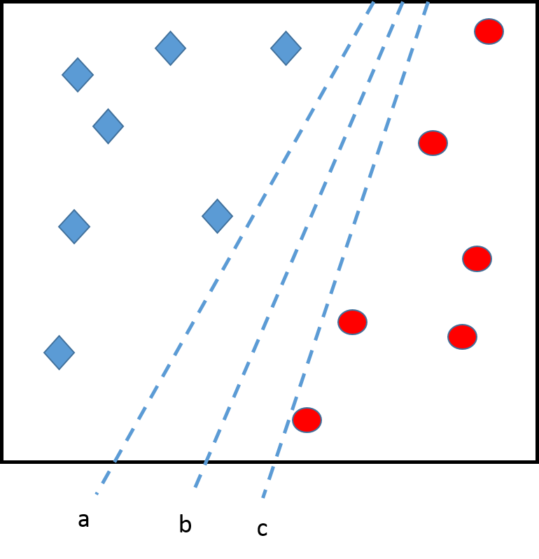
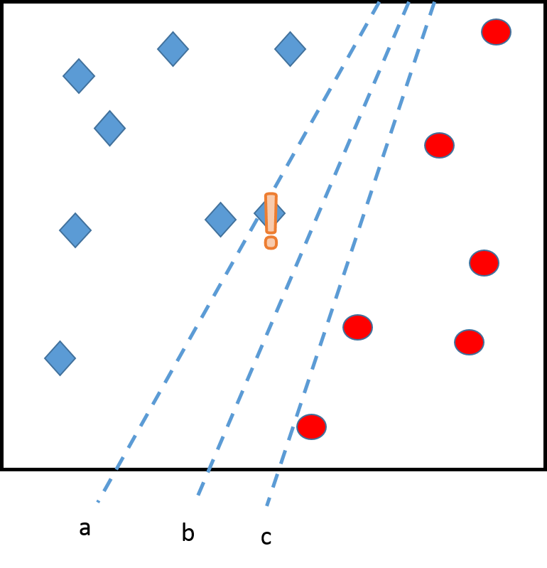
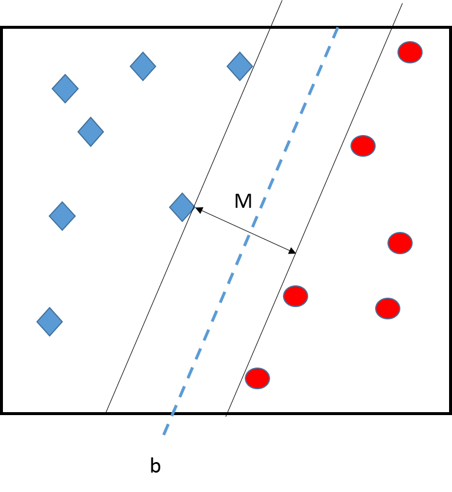
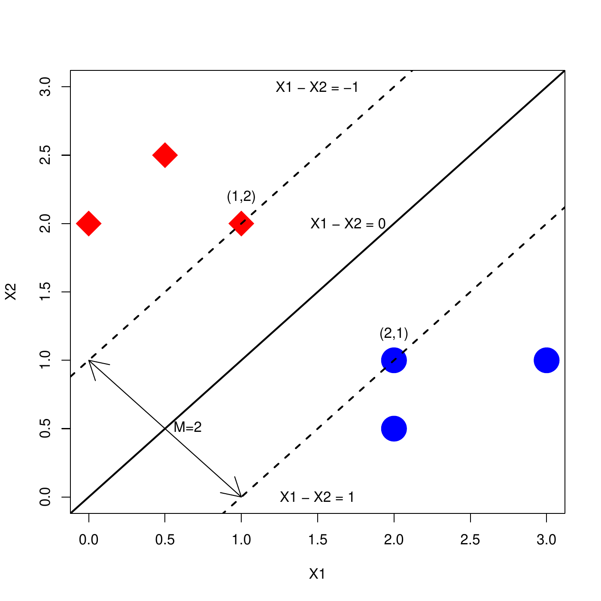
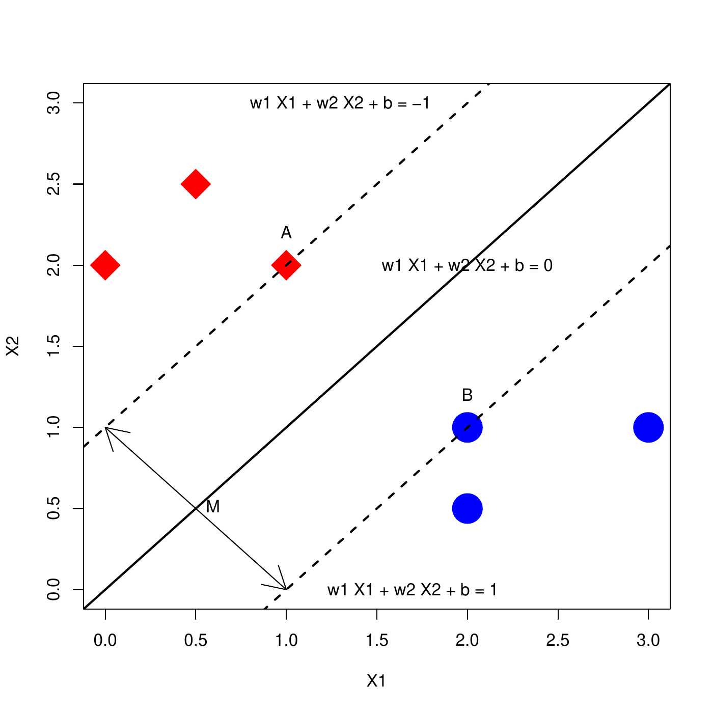
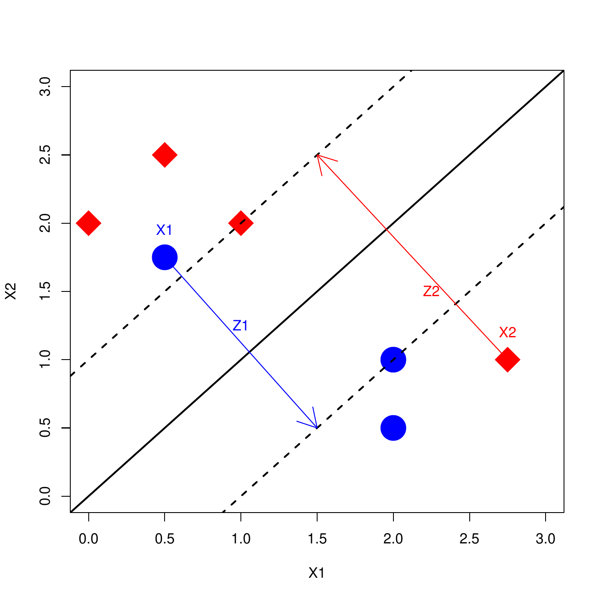
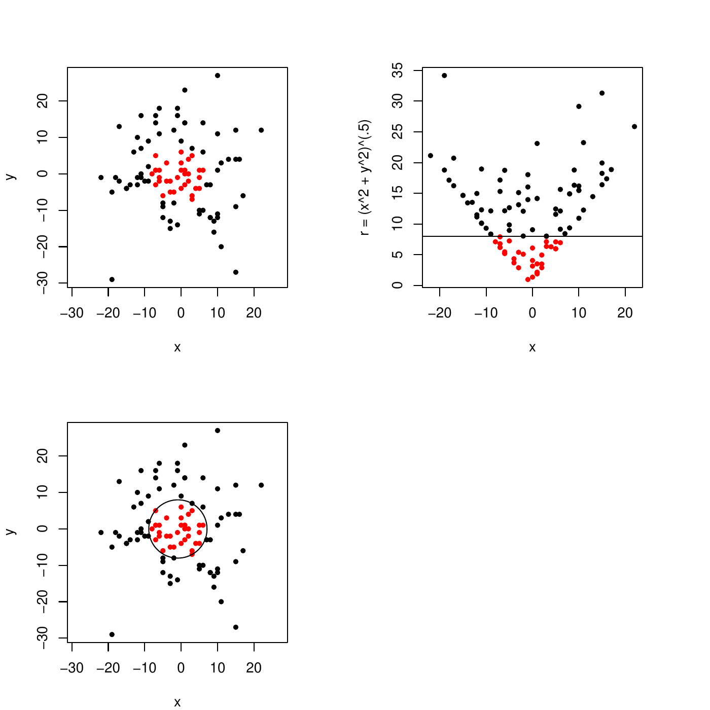

Support Vector Machines
Concept
Consider a binary classification with two features (axes)

The 3 dashed lines represents 3 different classifiers, equally good in terms of predictions. However, line b may be preferable...
Concept
Indeed, line b has more capacity to generalize. Suppose we observe a new diamond, with line a, the model would make an incorrect prediction, even if this diamond is not especially unexpected. The symmetric situation with circles would exclude line c also \(=>\) line b is the most robust choice.

The margins
Line b is better because it has a large margin \(M\). SVM are built on that principle: to look for a good classifier (good prediction) but also robust to new observations (large margin).

The borders can be expressed by a vector \(w=(w_1,\ldots,w_p)\) and a constant \(b\). The central line is all the \(x=(x_1,\ldots,x_p)\) such that \[w_1x_1 + w_2x_2 + \cdots + w_p x_p + b = 0\] i.e. \[w^T x + b = 0.\] The borders are such that \(w^T x + b = -1\) and \(w^T x + b = 1\). In the next slide example,
the number of features is \(p=2\),
\(w=(1,-1)\),
\(b=0\).

For a good separation, we generally look for a central line \[w^TX + b = 0,\] at the middle of the two closest points (\(A\) and \(B\) on the next slide) and such that
\(w^T X_A + b = -1\)
\(w^T X_B + b = 1\)
In addition, we want that all the red diamonds are above the upper border, and all the blue circles are below the lower border. This translates into
\(w^T X_i + b \leq -1\), for all \(i\) such that \(Y_i\) is "red diamond".
\(w^T X_i + b \geq 1\), for all \(i\) such that \(Y_i\) is "blue circle".

It can be shown that the distance between the two borders is the margin \(M\), and can be computed as \[M=2/\sqrt{w^T w}.\] Thus, one should look for
all the points are separated (previous inequalities)
the margin \(M\) is maximum or, equivalently, \(w^Tw\) is minimum.
Geometry
To further simplify the notation, note that, in this perfect configuration,
Blue circles (below) are such that \(w^T x_i + b \geq 1\)
Red diamonds (above) are such that \(w^T x_i + b \leq -1\)
Thus, we assign the outcome values \(y_i=-1\) to red diamonds and \(y_i=1\) to blue circles, we have all these inequality can be written as \[y_i (w^T x_i + b) \geq 1, \quad \mbox{for all } i.\]
Optimization problem
Overall, to solve the SVM, one looks for \(w\) for which \(w^Tw\) is minimum and \[y_i (w^T x_i + b) \geq 1, \quad \mbox{for all } i.\] This can be written as the optimization problem \[\begin{aligned}
\min_{w, b} && \frac{1}{2}w^Tw \\
\mbox{s.t. } && y_i(w^Tx_i + b) \geq 1, \quad i=1,\ldots ,n\end{aligned}\] This problem can be solved using quadratic program under linear constraints (see your favorite Optimization course).
The solution of this problem will provide a perfect separation between the 2 categories with the largest margin.
Support vectors
Points that are well inside their margins are not playing a big role. In fact, the margins (and hence the central line) are completely defined by the points on the margins, i.e. those \(i\) such that \[y_i(w^T x_i + b) = 1.\] These points are called support vectors.
Non linearly separable case
However, this approach is valid only if the categories are linearly perfectly separable: there exists a line that perfectly separates the classes.
Most cases are non-separable: no line can reach the perfect separation.

Under the perfect separation case, \(y_i(w^Tx_i + b) \geq 1\), for all \(i\).
In non-separable case, some \(i\) are not well classified, i.e., there is a tolerance \(z_i\geq 0\) such that \[y_i(w^Tx_i + b) \geq 1 - z_i.\]
If \(z_i=0\) then the instance \(i\) is correctly classified,
If \(z_i>0\) then the instance \(i\) is misclassified.
If all the \(z_i\)’s are large, then all the points are misclassified. To reach a good classification, we impose a small sum of the \(z_i\)’s \[\sum_{i=1}^n z_i\] The optimization problem is modified accordingly to \[\begin{aligned} \label{SVM_Primal} \nonumber \min_{w, b, z} && \frac{1}{2}w^Tw + C\sum_{i=1}^n z_i \\ \mbox{s.t. } && y_i(w^Tx_i + b) \geq 1-z_i, \quad i=1,\ldots ,n\\ \nonumber && z_i\geq 0, \quad i=1,\ldots ,n\end{aligned}\]
Soft margins
Parameter \(C\geq 0\) is called the cost and is fixed by the user.
It is a way to control the tolerance to bad classification:
If \(C=0\), there is no penalty on the \(z_i\)’s, thus they will be large, and so all the points can be misclassified.
If \(C\) is large, then most \(z_i\)’s will be small, thus only few misclassifications are allowed.
Soft margin and support vector
With soft margins, the support vectors are those \(i\) such that \[y_i (x_i^Tw + b) = 1-z_i.\]
If \(z_i=0\), the support vectors lies exactly on the margin and thus are correctly classified.
If \(z_i > 0\), the support vector is away from the margin, on the wrong side, and is thus incorrectly classified.
Remember that, like in the perfectly separable case, any instance \(i\) is correctly classified if \(z_i=0\), that is, \[y_i (x_i^Tw + b) \geq 1.\] Therefore, a support vector can be misclassified.
The dual problem
An equivalent way of writing the optimization problem ([SVM_Primal]) is in its dual form1 \[\begin{aligned} \label{SVM_Dual} \nonumber \max_{a} && \sum_{i=1}^n a_i - \frac{1}{2}\sum_{i=1}^n\sum_{j=1}^n a_i a_j y_iy_j x_i^Tx_j\\ \mbox{s.t. } && \sum_{i=1}^n a_i y_i = 0\\ \nonumber && 0 \leq a_i \leq C, \quad i=1,\ldots ,n\end{aligned}\] Support vectors are \(i\) such that \(a_i>0\).
If \(a_i < C\) then they are on their margin (equiv. \(z_i=0\))
If \(a_i=C\) then they are inside the margin (equiv. \(z_i>0\)).
The prediction formula
If the dual is more difficult to interpret, it provides a nice prediction formula. The prediction of the class of a new instance \(x\) is based on a decision score (below \(\theta\) contains all the parameters of the SVM) \[d(x;\theta) = \sum_{i=1}^n a_i y_i x_i^Tx.\] The prediction then is \[f(x;\theta) = \left\{ \begin{array}{rl} 1, & \mbox{if } d(x;\theta) > 0,\\ -1, & \mbox{if } d(x;\theta) < 0.\\ \end{array} \right.\]
The decision has an interesting form: \[d(x;\theta) = \sum_{i=1}^n a_i y_i x_i^Tx.\] It is a weighted sum of the \(y_i\)’s in the training set. The weights are
The support vectors, \(0 < a_i \leq C\), enter into the sum with more or less weights. The other cases (non-support vectors), have \(a_i=0\) do not enter into the sum.
The vectors such that \(x_i^Tx\) is large will participate more to the sum. This \(x_i^Tx\) is a measure of proximity (the larger, the more \(x_i\) and \(x\) are similar).
In summary, the prediction of \(y\) will be similar to the important support vectors \(y_i\) for which the features \(x_i\) are close to the new features \(x\).
Kernel-based prediction
The proximity \(x_i^Tx\) is called a kernel. In general, \[d(x;\theta) = \sum_{i=1}^n a_i y_i k(x_i,x).\] The dual ([SVM_Dual]) is written \[\begin{aligned} \nonumber \max_{a} && \sum_{i=1}^n a_i - \frac{1}{2}\sum_{i=1}^n\sum_{j=1}^n a_i a_j y_iy_j k(x_i,x_j)\\ \mbox{s.t. } && \sum_{i=1}^n a_i y_i = 0\\ \nonumber && 0 \leq a_i \leq C, \quad i=1,\ldots ,n\end{aligned}\]
Other kernels
Usual kernels are
Linear \[K(x,x') = x^Tx'\]
Polynomial of degree \(q\) \[K(x,x') = \left(k_0 + \gamma x^Tx'\right)^q\]
Radial basis \[K(x,x') = \exp\left(-\gamma (x-x')^T(x-x')\right).\]
Sigmoid \[K(x,x') = \tanh\left(-\gamma x^Tx' + k_0\right).\]
For each, the parameters \(k_0\) and \(\gamma\) are set by the user.
Underlying features
Using a kernel other than \(x^Tx'\) can be shown to be equivalent to create new features \(h(x)\). New features can help in separating the cases: e.g., below a non-separable case in \((x,y)\) becomes separable by the new feature \((x^2+y^2)\):

However, with the kernel, the exact form of these new features cannot be known.
Interpretability
Interpretability
Support Vector Machine models are not interpretable.
Unlike regressions and trees, they do not provide any way to know the association between the features and the outcome.
Interpretability must therefore rely on generic methods (see later in the course).
Selection of variables
Model complexity
Like for regressions and trees, to apply the Occam’s razor, we need to be able to control the model complexity. In the case of SVM, this is done by controlling the cost \(C\). Reminder,
If \(C=0\), then all the points can be misclassified. Therefore, the model is simple.
If \(C\) is large, then only few misclassifications are allowed. Therefore, the model is complex.
The choice of \(C\) is made by the user and can be selected as a hyperparameter using data splitting strategies (see later in the course).
General cases
SVM for multiclass
So far, we have seen only SVM for a binary classification. For the multiclass case (\(K>2\) classes), the principle remains the same except that several classifiers are built according to one of the following strategies:
One versus the rest: for a new \(x\), \(d_k(x;\theta)\) is the decision function for class \(k\) versus all the others. The final prediction is the class that has the highest decision value, \[f(x;\theta) = \arg\max_{k=1,\ldots,K} d_k(x;\theta).\]
One versus one: for all the \(\binom{k}{2}\) unique pair of classes \((k,k')\), build a svm on the outcomes in these two classes. Then, the prediction is obtained by voting: the predicted class \(f(x;\theta)\) is the one that has the highest number of decisions in its favor.
SVM for regression
This topic is outside the range of this course, but SVM can be adapted to regression with a similar property of robustness.
Similarly to the classification case, the final prediction is of the kernel form \[f(x;\theta) = \sum_{i=1}^n a_i y_i k(x_i,x).\]
Footnotes
Again see your favorite Optimization course.↩︎